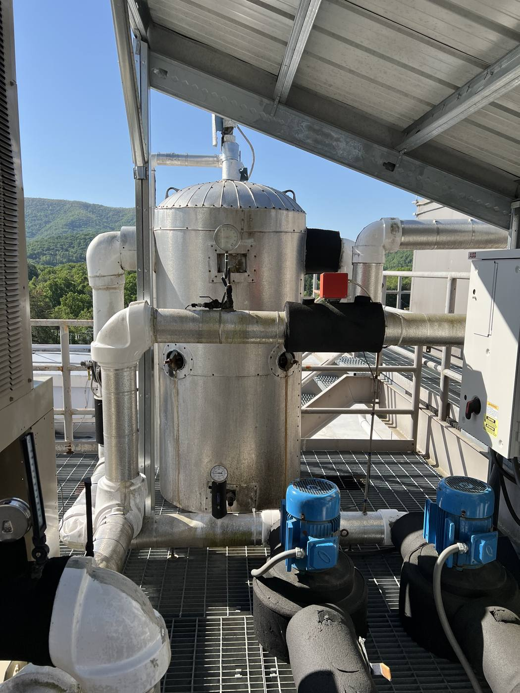
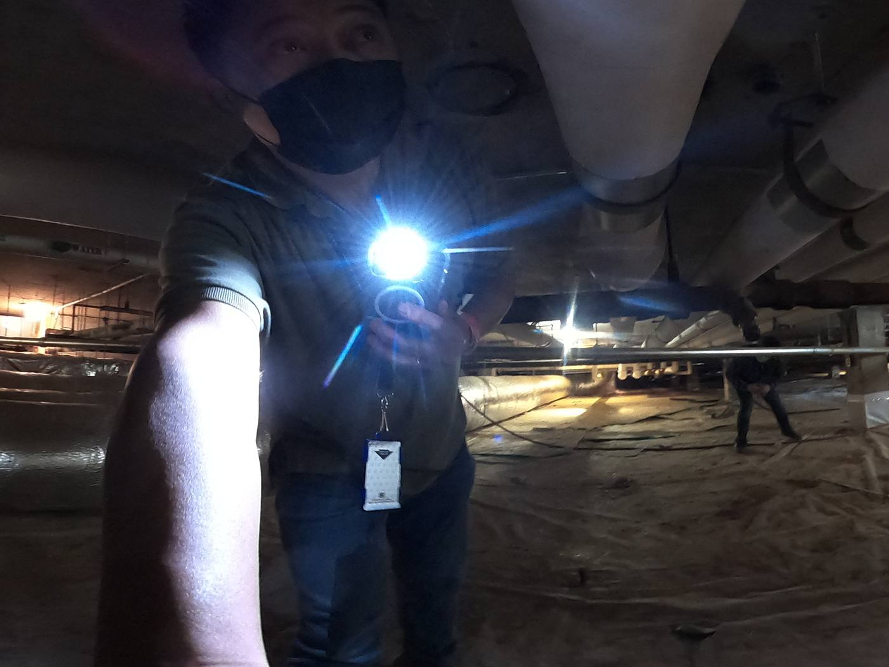
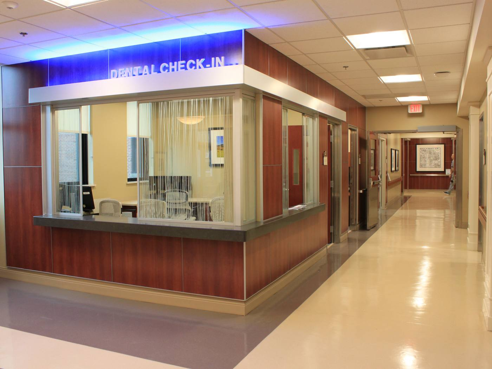

The challenge
Chilled water is not a comfort system in a hospital. It cools operating rooms, imaging equipment, pharmacy and lab spaces, and it feeds every air handler in the building. Building 47, the main hospital, depends on three large chillers pushing water through a distribution network that had reached the end of its service life.
Replacing that network meant demolishing and rebuilding piping across multiple floors of a fully occupied, mission critical facility, in tight spaces, without interrupting patient care or building services. The engineering was the straightforward part. Sequencing it was not.
What we did
Alares provides full design services as prime: architectural, mechanical, structural, fire protection and cost estimating, with New England Engineering supporting electrical and plumbing design and Trophy Point providing cost estimating. The scope covers load calculations for the existing system, pipe sizing throughout the facility using HVAC Solutions modeling, demolition of the existing piping and insulation, installation of the new piping and insulation, and reconfiguration of the system so chilled water reaches every air handling unit properly.
Before designing any of it, we reviewed the existing documentation, verified field conditions and worked the applicable codes, including current NFPA, VA Fire Safety and VA infection control requirements.
Right sizing instead of replacing in kind
The easy move on a replacement like this is to match what is already there. We ran the load calculations first and modeled the system to determine optimal pipe sizing throughout the building. Right sizing the distribution improves efficiency and capacity at the same time, and it lowers what the hospital spends to run the system for the next several decades.
Phasing so the water never stops
The single most important deliverable on this project is not a pipe detail, it is the phasing plan. We sequenced the work so chilled water service stays continuous while sections come down and go back in, floor by floor and area by area. That plan is what allows a hospital to keep operating around an active demolition.
Infection control as a design product
Cutting into ceilings and walls in a hospital releases dust, and dust carries risk for vulnerable patients. Alares produced Infection Control Risk Assessment plans and drawings as part of the design package, defining the barriers, containment and protections that safeguard patients, staff and sensitive medical equipment while construction moves through occupied floors.
The outcome
The hospital is getting a right sized, efficient chilled water distribution system with better reliability and lower maintenance demand, fully compliant with VA design standards, NFPA and VA Fire Safety codes. Full hospital operations have been maintained throughout construction, with zero unplanned outages.
That last number is the one worth sitting with. On a project this invasive, in a building this sensitive, the measure of good design is that nobody inside the hospital ever had to notice it was happening.


